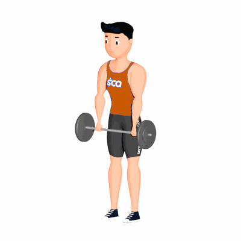

Stiff

Exercício funcional para fortalecimento e hipertrofia. Considerado um exercício chave para ganhar massa muscular. Trabalha enorme quantidade grupo musculares, auxilia na postura e desenvolver a força.
Ficha Técnica
Tipo: Musculação
Grupo Muscular: Perna
Aparelho: Nenhum
Músculos: Nenhum
Como realizar
- Posicione diante de uma barra com pesos;
- Pegue-a com as mãos em uma distância superior a largura dos quadris;
- Coluna reta e abdome contraído, posicione os pés em paralelo um ao outro com distancia similar a largura dos quadris;
- Manter a coluna reta e abdome contraído;
- Agache flexionando os joelhos e, a mesmo tempo, realizando uma ligeira inclinação do troco para frente, descendo a barra;
- Desça até as coxas ficarem em um ângulo de 90 graus, retorne à posição inicial;
- Repita os movimentos, conforme o número de repetições orientado pelo professor.
 RC STORE
RC STORE